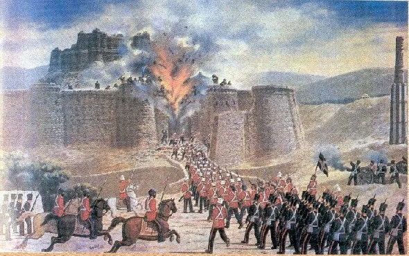
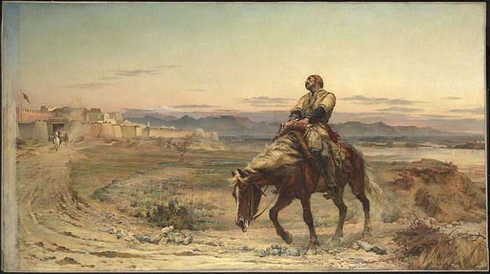
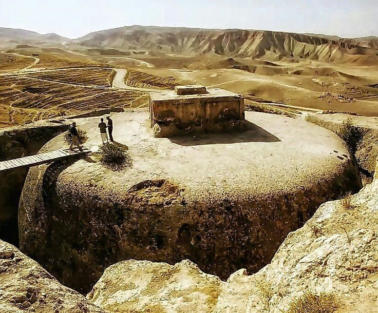
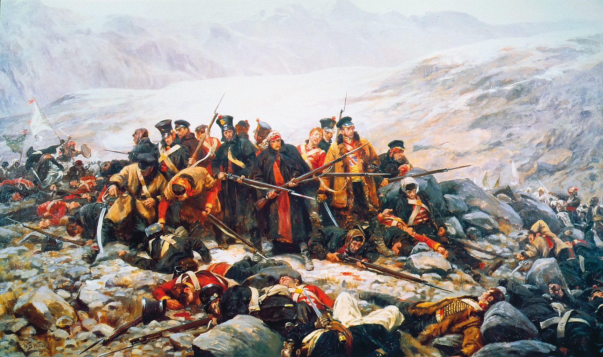
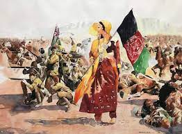
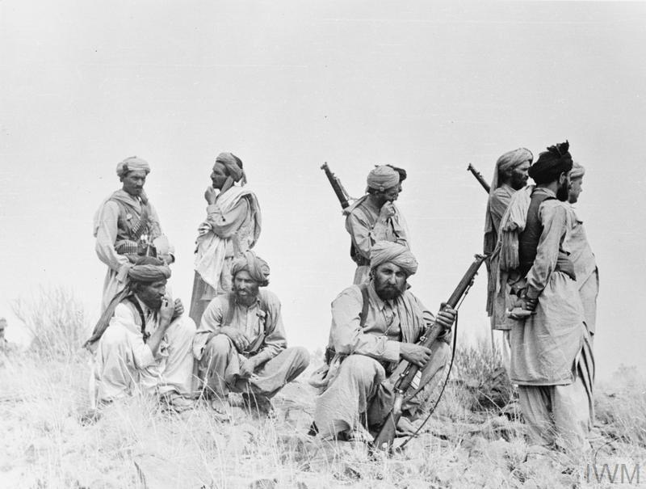
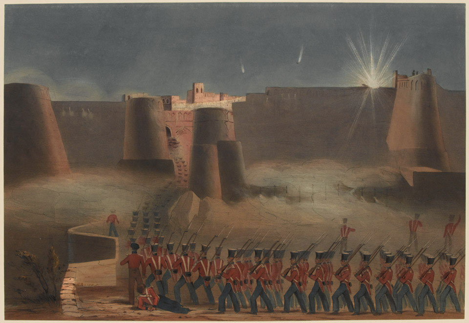

قلعه غزنی
آخرین عسکر انگلیس که به شکل زخمی خود را از کابل به جلال آباد رساند.
تخت رستم در ولایت سمنگان
معایده گندمک
خانم افغان که نام اش ملاله بود پرچم کشور را به بالانمود.
مردم با غیرت افغانستان
قلعه غزنی